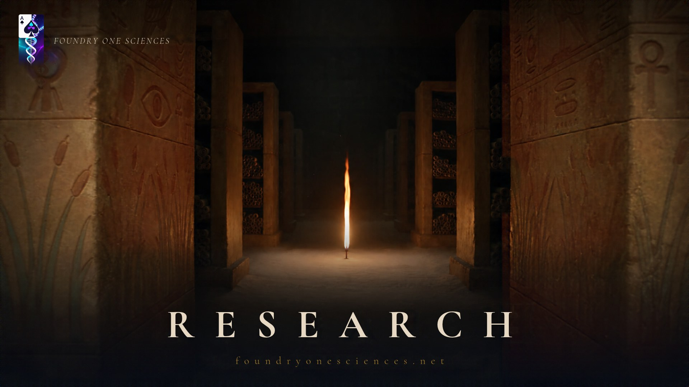

Medicine's record almost certainly holds a case like yours, and what happened next. The Research Portal is where you open that case.

Step insidefoundryonesciences.net →The biggest research platforms in the world are built to retrieve. You ask a question, and they hand you a stack: abstracts, citations, summaries. Institutions pay for them by the seat and by the year. And somebody still has to read the stack and decide what it means.
The Research Portal starts where the stack ends. It reads across medicine, not just the specialty your question started in. And it's built to come back with a case file: everything that could be involved, and how far the evidence goes for each one.
Behind the Research Portal runs the Seven Stage Engine. It's the same engine physicians already use on their most complex patient cases. It treats your question like a case. Everything that could be involved gets named and weighed, then charged, cleared or left open, and the file shows its work.
Start from a disease, a drug, a gene or target, a pattern of symptoms, a company's product, or something you paste.
The portal narrows your question with you, one line at a time, until it's sharp enough to answer.
The engine takes it from there, across seventeen specialties. The answer to a heart question is sometimes filed under kidneys.
The answer to a case will be a Dossier: a case file, not an essay. It names everything that could be involved in your question and says how far the evidence goes for each one. Every line cites one source and carries a word-for-word quote from it, so you can check the file yourself.
The rules behind it already run inside the engine on physician cases:
Case files are open today, and the bureau replies to the cases it can take. The Dossier is the next door to open.
Is there a signal on our drug we have not seen?
Does the science support that this caused that?
What is hiding in this product before we buy it?
Does the evidence justify paying for this?
What has nobody connected about our disease?
What is behind this cluster?
medical specialties, each asked about every case.
squares on the map: every specialty asked what treats it, how it shows, and what causes it.
cross-specialty findings scored and catalogued as of April 2026, held under seal.
Reads across PubMed · ClinicalTrials.gov · Europe PMC · arXiv · ChEMBL · Open Targets · Gene Ontology · Synapse · and the open web
The vault has six doors. Pick one and open a case file.
We never stop looking, because we hope to never stop finding.
Findings are original and conclusive only on the data contained and researched in them. Taking a finding further, including any clinical testing or production, is the user's responsibility.